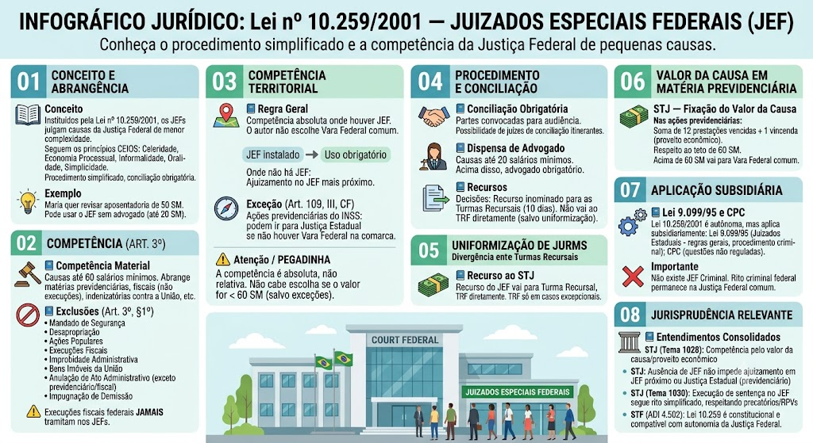

Material de estudo: Juizados Especiais (Lei 9.099/1995 e Lei 10.259/2001)
Material complementar · Ver fonte no GitHub
Lei nº 9.099/1995 — Juizados Especiais Cíveis e Criminais
O que são os Juizados Especiais
Os Juizados Especiais, instituídos pela Lei nº 9.099/1995, têm como objetivo resolver conflitos de menor complexidade de forma rápida, simples e barata. Possuem competência cível (até 40 salários mínimos) e criminal (infrações de menor potencial ofensivo). O procedimento é simplificado, com menos formalidades, e em muitos casos dispensa advogado.
Situação prática
João comprou um celular defeituoso e a loja não quer trocar. Ele pode ir ao Juizado Especial Cível, onde o processo é mais rápido e não precisa de advogado se o valor da causa for até 20 salários mínimos.
Mnemônico CEIOS
Os princípios que regem os Juizados Especiais são resumidos no mnemônico CEIOS:
- Celeridade → processo rápido;
- Economia Processual → evitar atos desnecessários;
- Informalidade → reduzir exigências formais;
- Oralidade → preferência por atos falados;
- Simplicidade → linguagem acessível e procedimentos simplificados.
Competência cível
O Juizado Especial Cível julga causas de valor até 40 salários mínimos.
- Até 20 salários mínimos: a parte pode atuar sem advogado.
- De 20 a 40 salários mínimos: é obrigatória a assistência de advogado.
Vedações — quem NÃO pode ser parte autora (Art. 8º)
Não podem propor ação no JEC:
- O incapaz (menor de 18 anos);
- O preso;
- As pessoas jurídicas de direito público;
- As empresas públicas federais;
- A massa falida;
- O insolvente civil.
Exceções: o espólio, as microempresas (ME) e as empresas de pequeno porte (EPP) podem figurar como autores no JEC.
Causas que NÃO cabem no JEC
Não são admitidas no Juizado Especial Cível:
- Causas de natureza alimentar;
- Falimentares;
- Fiscais;
- Acidentes de trabalho;
- Estado, autarquias e empresas públicas federais como parte (exceto na condição de rés, em algumas situações).
Citação e intimações
A citação é feita, sempre que possível, por correspondência (correio com AR) ou por oficial de justiça. Não se admite citação por edital no Juizado Especial.
As partes devem comparecer pessoalmente às audiências, podendo ser representadas por preposto (no caso de empresas).
Recurso
Da sentença cabe Recurso Inominado no prazo de 10 dias.
Competência criminal — IMPO
O JECRIM processa e julga as Infrações de Menor Potencial Ofensivo (IMPO):
- Contravenções penais;
- Crimes com pena máxima não superior a 2 anos, cumulada ou não com multa.
Mnemônico: IMPO = pena máxima até 2 anos.
Procedimento — Termo Circunstanciado (TCO)
Não há Inquérito Policial (IP) para as IMPO. A autoridade policial lavrará o Termo Circunstanciado de Ocorrência (TCO), que contém:
- Resumo dos fatos;
- Qualificação das partes;
- Oitiva dos envolvidos e testemunhas;
- Antecedentes do autor.
Em lesões corporais leves, o boletim médico ou exame médico pode suprir a perícia formal.
1. Composição Civil dos Danos
É o acordo entre autor do fato e vítima para reparação do dano. Reduzido a termo e homologado pelo juiz, vale como título executivo judicial.
Efeito: Nos crimes de ação penal privada ou pública condicionada à representação, o acordo homologado gera renúncia ao direito de queixa ou representação.
2. Transação Penal
Não havendo composição civil, o Ministério Público pode propor a aplicação de pena restritiva de direitos ou multa.
Efeitos: NÃO gera condenação, reincidência ou antecedentes criminais.
NÃO cabe transação penal quando:
- O autor já foi condenado definitivamente à pena privativa de liberdade por crime;
- Já recebeu transação penal nos últimos 5 anos;
- Não preencher os requisitos legais.
Momento: antes do oferecimento da denúncia.
3. Suspensão Condicional do Processo (Sursis Processual)
Requisitos: crimes cuja pena mínima seja igual ou inferior a 1 ano. Ao oferecer a denúncia, o MP pode propor a suspensão. O acusado não pode estar sendo processado por outro crime e não pode ter sido condenado por outro crime.
Prazo: de 2 a 4 anos.
Condições comuns: reparar o dano, comparecimento mensal em juízo, não frequentar determinados lugares, não se ausentar da comarca sem autorização.
Revogação Obrigatória: se o beneficiário for processado por outro crime ou deixar de reparar o dano sem justificativa.
Revogação Facultativa: se for processado por contravenção penal ou descumprir qualquer condição imposta.
Prescrição: não corre durante o prazo de suspensão (Art. 89, §6º).
Ordem dos benefícios
📌 A ordem de aplicação dos benefícios é progressiva:
1º Composição Civil
2º Transação Penal
3º Suspensão Condicional do Processo
Quando NÃO se aplica
A Lei 9.099/95 não se aplica às seguintes situações:
- Lei Maria da Penha — vedado pelo STF e STJ (não se aplica o rito dos juizados, nem os benefícios despenalizadores);
- Justiça Militar;
- Concurso de crimes — se a soma das penas máximas ultrapassar 2 anos, não será IMPO;
- Crimes de trânsito graves — não cabe aplicação dos institutos despenalizadores quando houver: embriaguez ao volante, participação em racha, excesso de velocidade superior a 50 km/h acima do limite permitido (Lei 9.503/97).
Aplicação subsidiária do CPP/CPC
A Lei 9.099/95 é lei especial, mas aplica-se subsidiariamente o Código de Processo Penal e o Código de Processo Civil naquilo que não contrariar os princípios da simplicidade, celeridade e informalidade (Art. 92).
Lesão corporal leve e representação
A Lei 9.099/95 alterou o Código Penal para tornar a lesão corporal leve e a lesão culposa como ação penal pública condicionada à representação (exceto no âmbito da violência doméstica contra a mulher, onde permanece incondicionada — Súmula 542 STJ).
Entendimentos consolidados (STF/STJ)
Os tribunais superiores pacificaram os seguintes entendimentos:
- STF: A homologação da transação penal não importa em reconhecimento de culpa para fins cíveis automáticos.
- STJ (Tema 964): A transação penal não gera reincidência, nem maus antecedentes.
- STJ (Súmula 542): A ação penal por lesão corporal decorrente de violência doméstica é pública incondicionada (não se aplica a representação).
- STF (ADI 4.502): A Lei Maria da Penha é incompatível com os institutos despenalizadores da Lei 9.099/95.
Lei nº 10.259/2001 — Juizados Especiais Federais (JEF)
O que são os Juizados Especiais Federais
A Lei nº 10.259/2001 criou os Juizados Especiais Federais (JEF) para julgar causas de competência da Justiça Federal de menor complexidade, com base nos princípios da celeridade, economia processual, informalidade, oralidade e simplicidade (CEIOS). O procedimento é simplificado, com conciliação obrigatória e recursos restritos.
Situação prática
Maria deseja revisar sua aposentadoria do INSS, com valor da causa de 50 salários mínimos. Ela pode ajuizar a ação no Juizado Especial Federal, que tem procedimento mais rápido e não exige advogado para causas até 20 SM (regra geral).
Competência material (Art. 3º)
O JEF é competente para processar, conciliar e julgar causas de competência da Justiça Federal, inclusive execuções de sentenças, até o valor de 60 salários mínimos.
Alcance: abrange todas as ações de natureza federal, como previdenciárias, fiscais (não execuções), indenizatórias contra a União, etc.
Exclusões da competência (Art. 3º, §1º)
Não se incluem na competência do JEF as seguintes ações:
- Mandado de segurança;
- Desapropriação, divisão e demarcação de terras;
- Ações populares;
- Execuções fiscais (da União, autarquias e fundações públicas federais);
- Improbidade administrativa;
- Causas sobre bens imóveis da União;
- Anulação de ato administrativo federal (exceto previdenciário e fiscal);
- Impugnação de pena de demissão de servidor público.
Atenção: as execuções fiscais federais nunca tramitam nos JEFs, mesmo que o valor seja inferior a 60 SM.
Competência territorial
A competência do JEF é absoluta onde houver Juizado instalado. O autor não pode optar pela Vara Federal comum se a causa se enquadrar nos limites do JEF.
Onde não houver JEF: a ação pode ser ajuizada no JEF mais próximo da residência do autor.
Exceção (Art. 109, III, CF): As ações previdenciárias do INSS podem ser propostas na Justiça Estadual (Vara Federal não instalada) quando não houver Vara Federal na comarca.
Pegadinha
A competência é absoluta, não relativa. Havendo JEF instalado, não cabe ao autor escolher a Vara Federal comum para ações de valor inferior a 60 SM, salvo as exceções legais.
Conciliação obrigatória
Assim como nos juizados estaduais, a conciliação é fase obrigatória no JEF. As partes são convocadas para audiência de conciliação, podendo ser realizada por juízes de conciliação itinerantes para facilitar o acesso (Art. 4º).
Dispensa de advogado
Nas causas de valor até 20 salários mínimos, a parte pode atuar sem advogado. Acima desse limite, é obrigatória a assistência de advogado, aplicando-se a mesma regra dos Juizados Especiais Cíveis estaduais.
Recursos
Das decisões do JEF cabe recurso inominado para as Turmas Recursais, compostas por juízes federais, no prazo de 10 dias. Não cabe recurso diretamente ao TRF, salvo nas hipóteses de uniformização de jurisprudência.
Turma Nacional de Uniformização (TNU)
A TNU é órgão composto por juízes federais de todas as regiões, com competência para uniformizar a interpretação da lei federal nos JEFs. Cabe Pedido de Uniformização quando houver divergência entre decisões de Turmas Recursais de diferentes regiões sobre a mesma questão de direito material ou processual.
Recurso ao STJ
Se a decisão da Turma Regional ou da TNU contrariar súmula ou jurisprudência dominante do STJ, cabe recurso especial para o Superior Tribunal de Justiça (STJ), desde que preenchidos os requisitos de admissibilidade.
Dica de prova
O recurso contra decisão do JEF não vai diretamente para o TRF; ele vai para a Turma Recursal. O TRF só é acionado em casos excepcionais, como no pedido de uniformização (que vai para a TNU) ou no recurso especial ao STJ.
STJ — Fixação do valor da causa em matéria previdenciária
O STJ pacificou que, nas ações previdenciárias, o valor da causa corresponde à soma de 12 prestações vencidas mais o valor de 1 parcela vincenda (ou o total do proveito econômico pretendido), respeitando o teto de 60 salários mínimos para fins de competência do JEF.
Atenção: Se o valor ultrapassar 60 SM, a competência será da Vara Federal comum, mesmo que a matéria seja previdenciária.
Aplicação subsidiária (Lei 9.099/95 e CPC)
A Lei 10.259/2001 é autônoma, mas aplicam-se subsidiariamente, no que não conflitar com seus princípios:
- A Lei 9.099/95 (Juizados Especiais Estaduais) para o procedimento criminal (não há JEF criminal) e para regras gerais;
- O Código de Processo Civil (CPC) para questões não reguladas expressamente.
Importante: Não existe Juizado Especial Federal Criminal; o rito criminal federal permanece na Justiça Federal comum.
Entendimentos consolidados (STF/STJ)
Os tribunais superiores pacificaram os seguintes entendimentos:
- STJ (Tema 1028): A competência do JEF é fixada pelo valor da causa, que deve ser calculado de acordo com o proveito econômico pretendido;
- STJ: A ausência de JEF em determinada comarca não impede o ajuizamento da ação no JEF mais próximo ou na Justiça Estadual (para previdenciário);
- STJ (Tema 1030): A execução de sentença contra a fazenda pública nos JEFs segue o rito simplificado, mas os precatórios e RPVs respeitam o regime constitucional;
- STF (ADI 4.502): A Lei 10.259 é constitucional, sendo compatível com a autonomia da Justiça Federal.
Mapa-mental
